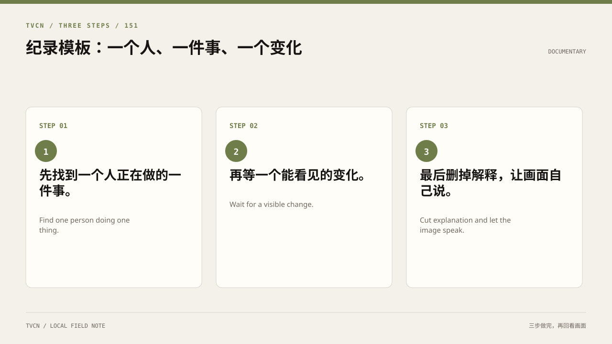

可套用的 60 秒分段表
| 段落 | 时间 | 画面 | 声音/通过线 |
|---|---|---|---|
| 人物与事 | 0–10 秒 | 人物已经在做事，不是站着受访 | 环境声先入；不铺解释性音乐 |
| 过程 | 10–30 秒 | 动作连续，能看出步骤和难度 | 同期声保留；采访只作补充 |
| 变化 | 30–45 秒 | 一个可见结果：完成、失败、改变决定 | 不靠人物自己说“我变了” |
| 余波 | 45–60 秒 | 变化后的第一个动作或空间 | 留一句真话；不要总结时代 |
开机前先填三行
- 一个人：写名字和今天要做的一件事。
- 一个变化：镜头里能看见什么不同？不能只写“他成长了”。
- 不拍什么：列出三件会变成宣传片的内容，现场不拍。
现场
一个人、一件正在做的事、一个可见变化；先拍他做事，不拍采访。
DIAGRAM / Documentary
三步流程

怎么做
- 选一个人和一件正在做的事。
- 先拍他做事，不先拍采访。
- 等一个能看见的变化发生，再决定结构。
别踩
别从时代背景开始；那通常是论文，不是片子。
图片说明：本页封面、图解与步骤图是编辑示意或结构图，不是本页实测照片，也不能当作器材测试证据；AI 辅助生成的图会在图注标出。判断器材或画面，以正文的测试条件与现场记录为准。